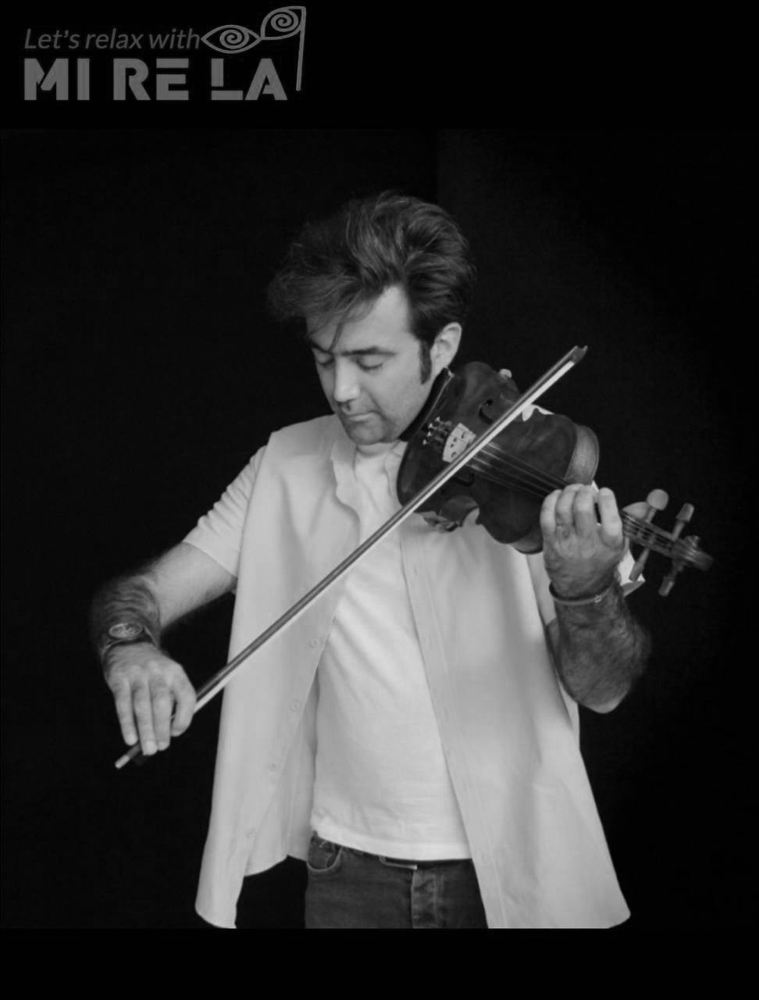

ویولن در می ر لا
راهنمایی کلاسها و اساتید
سامان دماوندی
- مدیر و موسس آکادمی می ر لا
- دانش آموخته کارشناسی رشته موسیقی گرایش آهنگسازی ایرانی
- دانش آموخته کارشناسی رشته مهندسی صنایع
- دانش آموخته کارشناسی ارشد رشته مدیریت محیط زیست

فرشید فرهمندحسن زاده
فرشید فرهمند متولد ۱۳۵۴ ، از برجسته ترین شاگردان زنده یاد اسدالله ملک و دانش آموخته رشته موسیقی در دانشگاه تهران می باشد. موسیقی را نزد مسعود حسنخانی آغاز و از محضر اسدالله ملک بهره فراوان جست بطوری که دیری نپایید که خلیفه کلاس ملک شد، با تکمیل نوازندگی نرد ایشان کم کمخود صاحب سبک و روش موسیقایی خود شد. فرشید فرهمند در سابقه هنری خود همکاری با بزرگانی نظیر حسین خواجه امیری(ایرج)، اکبر گلپایگانی(گلپا)، فضل الله توکل، علیرضا افتخاری، محمد جلیل عندلیبی، رضوی سروستانی و .... فرشید فرهمند کتابهای ارزشمند و فاخری را به چاپ رسانیده که جای خالی آنها مدتها در رپرتوار موسیقی ایرانی کشور خالی بود و امروزه هنرجویان میتوانند به راحتی به کتابهای مذکور دسترسی داشته و از آنها استفاده نمایند. کتابهای چاپ شده ایشان به شرح زیر می باشند:
فرشید فرهمند متولد ۱۳۵۴ ، از برجسته ترین شاگردان زنده یاد اسدالله ملک و دانش آموخته رشته موسیقی در دانشگاه تهران می باشد. موسیقی را نزد مسعود حسنخانی آغاز و از محضر اسدالله ملک بهره فراوان جست بطوری که دیری نپایید که خلیفه کلاس ملک شد، با تکمیل نوازندگی نرد ایشان کم کمخود صاحب سبک و روش موسیقایی خود شد. فرشید فرهمند در سابقه هنری خود همکاری با بزرگانی نظیر حسین خواجه امیری(ایرج)، اکبر گلپایگانی(گلپا)، فضل الله توکل، علیرضا افتخاری، محمد جلیل عندلیبی، رضوی سروستانی و .... فرشید فرهمند کتابهای ارزشمند و فاخری را به چاپ رسانیده که جای خالی آنها مدتها در رپرتوار موسیقی ایرانی کشور خالی بود و امروزه هنرجویان میتوانند به راحتی به کتابهای مذکور دسترسی داشته و از آنها استفاده نمایند. کتابهای چاپ شده ایشان به شرح زیر می باشند:
- دوره ی ردیف نوازی اسداله ملک، باز نویسی و ویرایش انتشارات سرود ۱۳۹۰
- ساز تنها کتاب اول (چهارمضراب ها و قطعات آوازی حبیب اله بدیعی)، انتشارات سرود ۱۳۸۹
- ساز تنها کتاب دوم (چهارمضراب ها و قطعات آوازی حبیب اله بدیعی)، انتشارات سرود ۱۳۹۰
- ساز تنها کتاب سوم (چهارمضراب ها و قطعات آوازی حبیب اله بدیعی)، انتشارات سرود ۱۳۹۱
- ردیف سازی اسداله ملک، انتشارات چنگ ۱۳۹۲
- گلستان نغمه ها ۱، نت تصانیف و ترانه های اسداله ملک، انتشارات سرود ۱۳۹۲
- نغمه های جاویدان ۱، چهارمضراب ها و قطعات آوازی پرویزی احقی ۱۳۹۳
- قطعات منتخب برای سازدهنی ترمولو، گرد آوری و تنظیم، ۱۳۹۴
- گلستان نغمه ها ۲:، نت تصانیف و ترانه های محمد حیدری، ۱۳۹۶
- چهارمضراب، و آهنگ ها و تصانیف منتخب مسعود حسنخانی، انتشارات فرهنگ رسا ۱۳۹۷
- ساز تنها کتاب چهارم (چهارمضراب ها و قطعات آوازی حبیب اله بدیعی)، انتشارات سرود ۱۳۹۷
ویولن
ویولن پر رمز و راز ترین و زیباترین ساز از دیدگاه خیلی از مردمان جهان. سازی که مدتها در اروپا به ساز شیطان معروف بود زیرا که توانایی ایجاد زیباترین و عجیب ترین صدا ها را داراست.
نمونه های اولیه آن با الهام از ساز رباب در قرن ۹ میلادی ساخته شد و شکل امروزی آن در قرن ۱۶ تکامل یافت. ویولن جز جدانشدنی تمامی ارکسترهای سراسر دنیاست که در چهار گروه ویولن(violin)، ویولا(viola)، ویولن سل(cello)، کنترباس(contrebasse) تقسیم بندی و اجرا میشود.
آکادمی می ر لا با بهره گیری از مجرب ترین اساتید و به روز ترین رپرتوارهای آموزشی کلاس های ویولن را برای شما هنرجویان عزیز برگزار می نماید.
 تهران، خیابان کریمخان زند، نجات الهی جنوبی، خیابان امانی، پلاک ۶، زنگ ۶، واحد ۷
تهران، خیابان کریمخان زند، نجات الهی جنوبی، خیابان امانی، پلاک ۶، زنگ ۶، واحد ۷